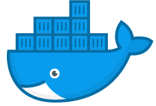

Containers
The Basics
What is a Container?
A container image is a lightweight, stand-alone, executable package of a piece of software which includes everything needed to run it: code, runtime, system tools, system libraries, and settings.
Why Use Containers?
Virtual Machines vs Containers
 |
 |
Do One Thing and Do It Well.
Container Types
- 
Docker
Rkt
LXC
OpenVZ
FreeBSD Jail
AIX WPARs
Solaris Containers
Why Docker?


Docker Terms
Image vs Layer vs Container

With a Demo!
Dockerfile
All the manual stuff, but repeatable
Why haven't we jumped in?
- Security
- Service Linking (Discovery)
- Service Monitoring
- VM <-> Container communication
- Security
- Build Pipelines
- Scheduling
- Logging
- Security

Orchestrators

Docker Compose
Docker Swarm
Kubernetes
Mesos
Marathon
Nomad
Cloud Orchestrators
Amazon ECS
Google Cloud
Azure Container Service